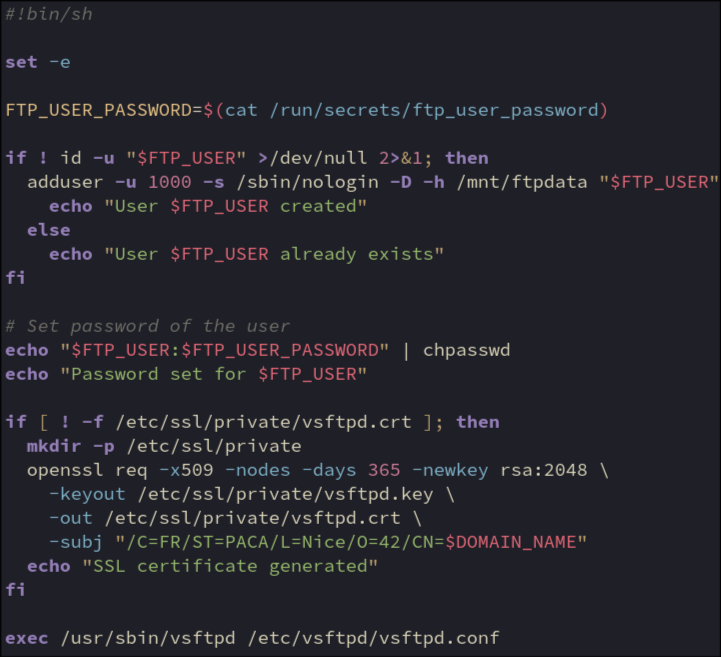

Exit on error
If any command fails, the script will exit and mariadb will not run with incomplete setup
Password to be used for the local ftp user
Generated in makefile and passed to container by docker secrets
Check if the user provided from .env has been created already
User created with UID of 1000 to match wp-data user. Shared ownership of files
No shell set
-D = no password set
Home directory set to mounted wordpress-data volume
Only runs if user doesn’t exist (first run or if env variable changed)
Set password to value provided by docker secrets
Runs on every launch in case the password file has been changed
Check if SSL cert is created
Will create it if not
Create ssl directory in nginx config directory
Openssl certificate request tool
Create a self-signed certificate
Don’t encrypt private key (no passphrase needed)
Valid for 1 year
Generate rsa private key with 2048 bits
Where to save private key and public certificate
Certificate subject (identity info)
${DOMAIN_NAME} inherited from .env via docker-compose.yaml
Start the vsftpd daemon in the foreground using the configuration file added during build
exec = becomes PID1